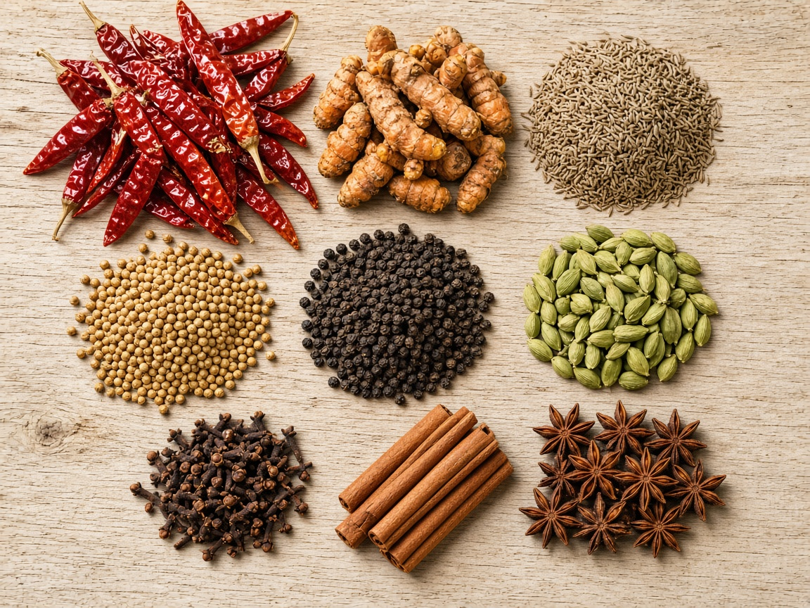
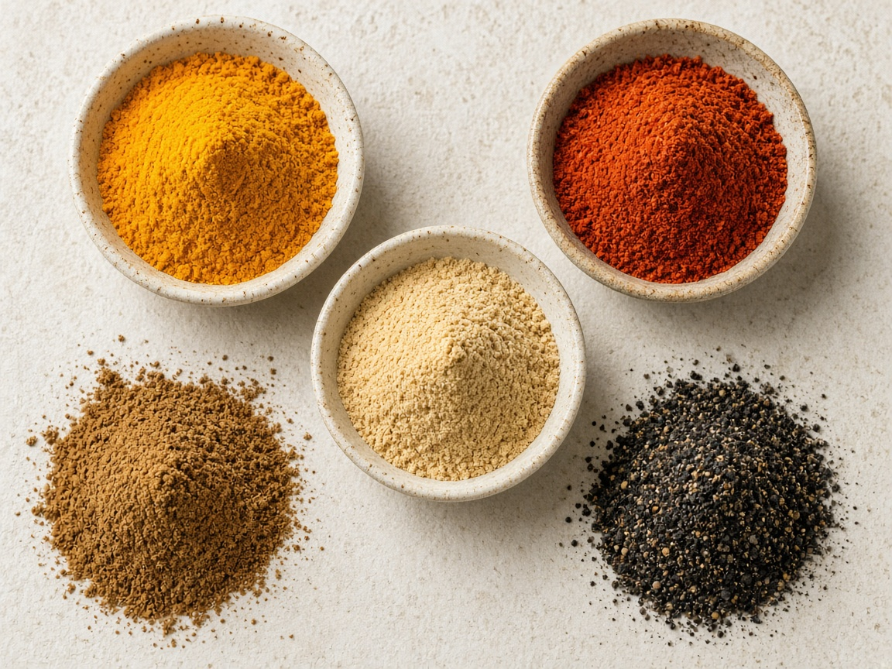
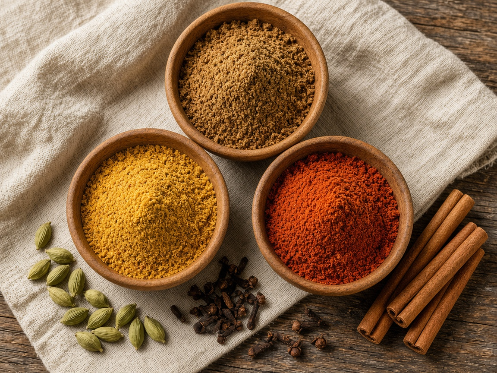
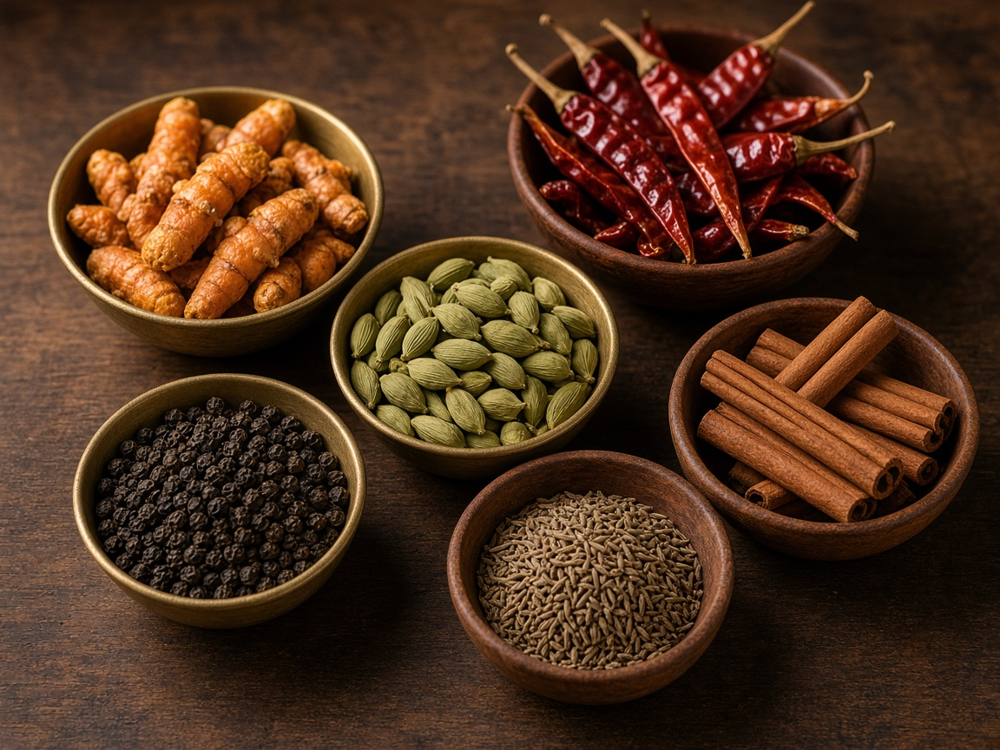

Whole Spices
Sun-dried whole spices with the aroma and colour of the region they were grown in.
Request whole spice quoteSeawyn · Spices
Whole spices, ground spices and blended masala — sourced from India’s best growing regions. Naturally sun-dried, cleaned and lab-tested for purity, colour and flavour.
What We Export
Tell us the spice, the form and the destination. Seawyn matches grade, colour and packing so every consignment tastes like the sample you approved.
Whole spices dried in the growing regions so aroma and colour stay intact.
Sorted and cleaned for stones, stems and foreign matter before packing.
Checked for purity, colour and flavour against the grade you specify.

Sun-dried whole spices with the aroma and colour of the region they were grown in.
Request whole spice quote
Milled for an even colour and a mesh size that suits your kitchen or factory line.
Request ground spice quote
Ready blends with a steady flavour profile, packed for retail shelves or food-service kitchens.
Request masala quoteHow a Spice Order Moves
Spice, form, heat, packing, destination.
We send lot-matching sample for aroma and colour check.
Cleaning and lab check for clean, colour and flavour.
Packed, documented and shipped — quick quote in a day.
Why Buy Spice from Seawyn

India grows it.
Seawyn ships the flavour.